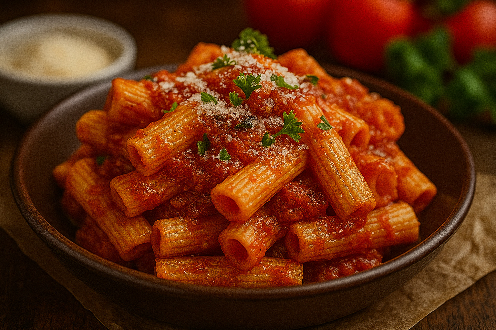

pasta

ingredients
- Pasta (spaghetti, penne, or your choice)
- Water
- Salt
- Olive oil
- Pasta sauce (tomato, Alfredo, or your choice)
- Grated cheese (Parmesan or your choice)
-
Optional: garlic, herbs (basil, oregano), vegetables, meat or seafood
directions
- Boil Water: Add salt to a big pot of boiling water.
- Cook Pasta: Add pasta, boil for 8–12 mins (check the box for time).
- Drain: Save a bit of pasta water. Drain the rest.
- Add Sauce: Mix pasta with your sauce (e.g., marinara, Alfredo).
- Serve: Top with cheese or herbs if desired.